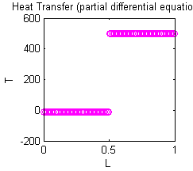
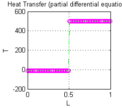
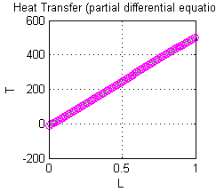

Contents
disp('"Решение первой начально-краевой задачи')
disp('для уравнения теплопроводности')
disp('конечно-разностной схемой (неявный метод)."')
plottools;
"Решение первой начально-краевой задачи
для уравнения теплопроводности
конечно-разностной схемой (неявный метод)."
Параметры построения схемы
h=0.01;
tau=0.005;
d=0.1;
L=1;
T=10;
Граничные условия
T1=-10;
T2=500;
N=T/tau;
M=L/h;
temp=zeros(N,M);
temp(:,1)=T1;
temp(:,M)=T2;
Начальные условия
temp(1,1:round(M/2))=T1;
temp(1,round(M/2)+1:M)=T2;
K=(d^2)*tau/(h^2);
k=0.8;
Неявная схема
Метод прогонки
for n=1:N-1
a=zeros(1,M);
b=zeros(1,M);
a(1)=(-K)/(1+2*K);
b(1)=(temp(n,1)+K*T1)/(1+2*K);
for i=1:M-2
a(i+1)=(-K)./(1+2*K+K*a(i));
b(i+1)=(temp(n,i+1)+K*b(i))./(1+2*K+K*a(i));
end;
temp(n+1,M-1)=b(M-1)-a(M-1)*T2;
for k=2:M-2
temp(n+1,M-k)=b(M-k)-a(M-k)*temp(n+1,M-k+1);
end;
end;
x=0.5*h:h:M*h-0.5*h;
y=temp(1,:);
h=plot(x,y,'mo');
set(h,'color','m');
axis([0 L 0 3]);
axis auto;
set(h,'EraseMode','xor');
xlabel('L');
ylabel('T');
title('Heat Transfer (partial differential equation).');

Аналитическое решение
Y=T1+(T2-T1)*x/L;
for i=1:100
Y=Y+2*(T2-T1)*cos(i*pi/2)*sin(i*pi*x/L)/(i*pi);
end;
hold on
grid on
hh=plot(x,Y,'c-.');
set(hh,'color','g');
set(hh,'EraseMode','xor');
pause(8);

Анимация
for t=2:N
y=temp(t,:);
set(h,'XData', x,'YData',y);
tt=tau*(t-1);
Y=T1+(T2-T1)*x/L;
for i=1:100
Y=Y+(2*(T2-T1)*cos(i*pi/2)*sin(i*pi*x/L)...
/(i*pi))*exp(-1*(d^2)*((i*pi/L)^2)*tt);
end;
set(hh,'XData',x,'YData',Y);
end;
